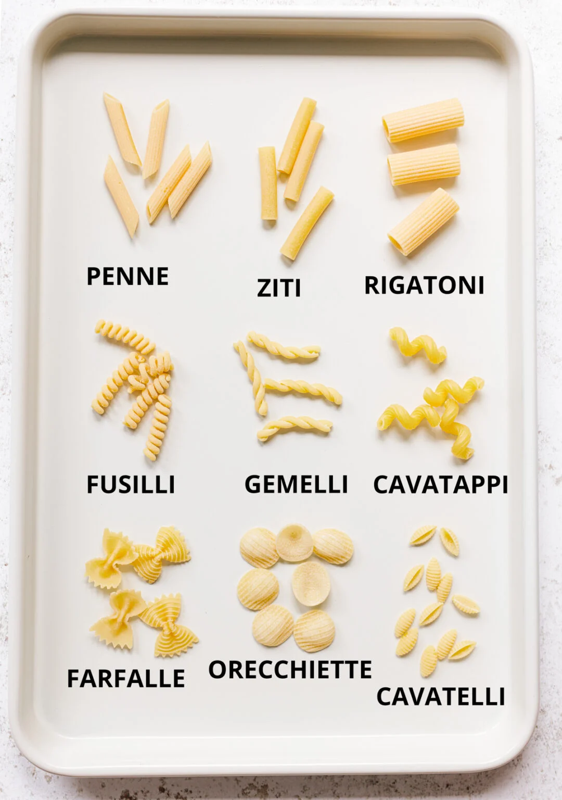

Faire cuire des pâtes à l'eau

Description :
Quand t'as la flemme de cuisiner.
Ingrédients :
- une casserole remplie d'eau,
- 150 grammes de pâtes,
- du sel,
- de la matière grasse, beurre ou huile,
- du fromage à pâte pressée cuite (comté, emmental...).
Recette :
- Mettre l'eau dans la casserole et saler ;
- Porter l'eau à ébullition ;
- Y mettre les pâtes et bien les remuer pour qu'elles ne se collent pas entre elles ;
- Après reprise de l'ébullition, laisser cuire le temps spécifié sur le sachet ou selon votre goût ;
- Vider l'eau à l'aide d'une passoire ou du couvercle de la casserole ;
- Ajouter la matière grasse ;
- Saupoudrer de fromage râpé.